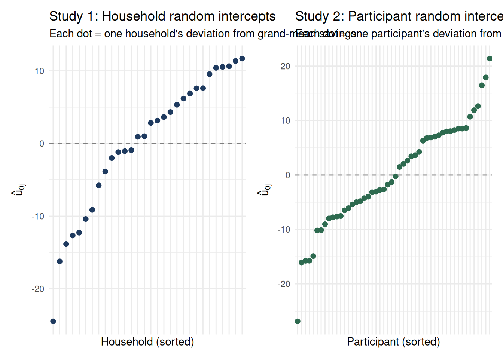
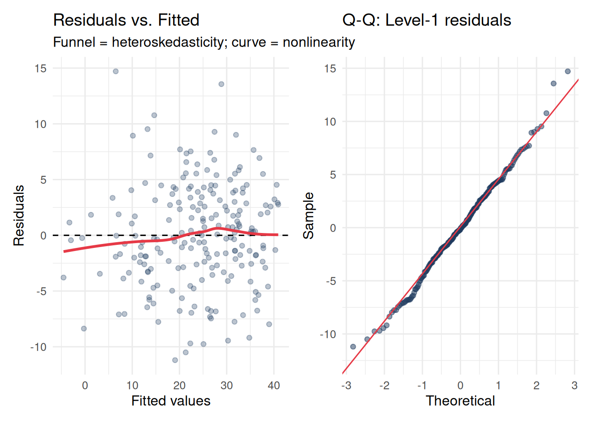
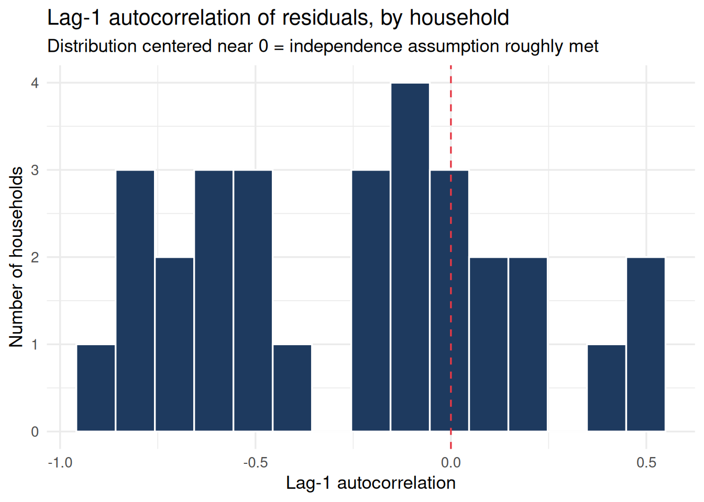
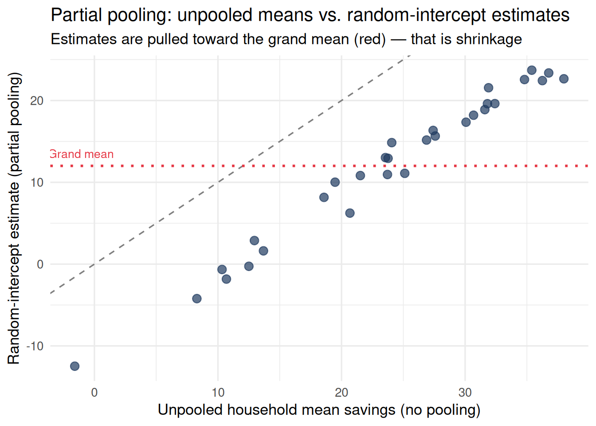

Fixed effects remove between-unit variation by absorbing it into dummy variables. That works, but it destroys information:
You can no longer estimate the effect of unit-level predictors (firm size, participant trait anxiety)
You cannot make predictions for new units not in your sample
You learn nothing about how much units differ from each other
Random intercepts take a different view. Instead of asking “what is the specific intercept of unit \(j\)?”, the model asks “what is the distribution of intercepts across all units in the population?” It treats unit-level deviations as draws from a probability distribution rather than as fixed constants to be estimated.
This single shift — from “estimate each intercept” to “estimate the distribution of intercepts” — has wide-reaching consequences for inference, prediction, and interpretation.
10.2 The Model in Two Equivalent Forms
10.2.1 Two-Level Notation
Random intercept models are most naturally described in two levels.
Level 1 describes variation within units (within the same person across days; within the same participant across stimuli):
The model estimates three variance parameters: \(\sigma^2_u\) (between-unit variance), \(\sigma^2_\varepsilon\) (within-unit residual variance), and their ratio defines the ICC.
where \(\alpha_j\) was estimated as a separate free parameter for each unit.
The random-intercept model replaces the free \(\alpha_j\) with \(\gamma_{00} + u_{0j}\), imposing the constraint that unit deviations are drawn from a normal distribution. This constraint is what enables partial pooling (shrinkage) and allows between-unit inference — but it comes with an assumption (normality of the random effects) that the FE model does not require.
10.3 Two Examples: Longitudinal and Experimental
The random-intercept model is equally natural in longitudinal and experimental settings. The structure is identical; only the substantive interpretation differs.
10.3.1 Example 1: Daily Mood and Sleep (Longitudinal/Repeated Measures)
30 people each complete a mood diary for 7 days. We want to know: within a person, does sleeping more predict better mood the next day?
Code
n_people <-30n_days <-7person_intercepts <-rnorm(n_people, mean =50, sd =8)df_sleep <-expand_grid(person =1:n_people,day =1:n_days) |>mutate(sleep =rnorm(n(), mean =7, sd =1.5),# True within-person effect of sleep on mood = 3 points per hourmood = person_intercepts[person] +3* (sleep -7) +rnorm(n(), 0, 5),person =factor(person) )# Fit random intercept modelmodel_ri_sleep <-lmer(mood ~ sleep + (1| person), data = df_sleep)summary(model_ri_sleep)
Linear mixed model fit by REML. t-tests use Satterthwaite's method [
lmerModLmerTest]
Formula: mood ~ sleep + (1 | person)
Data: df_sleep
REML criterion at convergence: 1363.5
Scaled residuals:
Min 1Q Median 3Q Max
-2.25868 -0.58424 -0.02361 0.62763 2.96667
Random effects:
Groups Name Variance Std.Dev.
person (Intercept) 92.52 9.619
Residual 24.59 4.958
Number of obs: 210, groups: person, 30
Fixed effects:
Estimate Std. Error df t value Pr(>|t|)
(Intercept) 28.1692 2.5523 101.4394 11.04 <2e-16 ***
sleep 2.9358 0.2566 181.1309 11.44 <2e-16 ***
---
Signif. codes: 0 '***' 0.001 '**' 0.01 '*' 0.05 '.' 0.1 ' ' 1
Correlation of Fixed Effects:
(Intr)
sleep -0.713
Reading the output:
\(\hat\gamma_{00}\) (Intercept fixed effect): the grand mean mood across all people and days
\(\hat\beta_1\) (sleep fixed effect): on average, one extra hour of sleep is associated with ~3 points higher mood, within the same person
\(\hat\sigma_u\) (person random effect SD): how much people differ in their baseline mood
\(\hat\sigma_\varepsilon\) (residual SD): how much a person’s mood varies day-to-day, after accounting for sleep
broom.mixed::tidy(model_ri_sleep, effects ="ran_pars") |> knitr::kable(digits =3,caption ="Variance components: how much do people differ vs. fluctuate?")
Variance components: how much do people differ vs. fluctuate?
effect
group
term
estimate
ran_pars
person
sd__(Intercept)
9.619
ran_pars
Residual
sd__Observation
4.958
10.3.2 Example 2: Stimulus Ratings in a Judgment Study (Experimental)
50 participants each rate 20 charity appeal images on their emotional impact (0–100). Half the images feature children; half feature adults. We want to know: does featuring a child vs. an adult increase perceived emotional impact?
Variance components: participant differences vs. image-to-image variation
effect
group
term
estimate
ran_pars
participant
sd__(Intercept)
10.011
ran_pars
Residual
sd__Observation
9.762
Notice the parallel: in the mood study, \(u_{0j}\) captures person differences in baseline mood. In the charity study, \(u_{0j}\) captures person differences in baseline emotionality. The math is identical. The interpretation is substantively different.
Code
# Visualize random intercepts for both examplesre_sleep <-ranef(model_ri_sleep)$person[, 1]re_charity <-ranef(model_ri_charity)$participant[, 1]p1 <-tibble(unit =seq_along(re_sleep), re =sort(re_sleep)) |>ggplot(aes(x =reorder(unit, re), y = re)) +geom_point(color ="#1e3a5f", size =2) +geom_hline(yintercept =0, linetype ="dashed", color ="gray50") +labs(title ="Study 1: Person random intercepts",subtitle ="Each dot = one person's deviation from grand mean mood",x ="Person (sorted)", y =expression(hat(u)[0*j])) +theme_minimal(base_size =11) +theme(axis.text.x =element_blank())p2 <-tibble(unit =seq_along(re_charity), re =sort(re_charity)) |>ggplot(aes(x =reorder(unit, re), y = re)) +geom_point(color ="#2d6a4f", size =2) +geom_hline(yintercept =0, linetype ="dashed", color ="gray50") +labs(title ="Study 2: Participant random intercepts",subtitle ="Each dot = one participant's deviation from grand mean emotionality",x ="Participant (sorted)", y =expression(hat(u)[0*j])) +theme_minimal(base_size =11) +theme(axis.text.x =element_blank())p1 + p2

10.4 The Assumptions of Random Intercept Models
The same four assumptions apply to both the longitudinal and the experimental settings. Where the assumption plays out differently across contexts, both are discussed.
WarningAssumption 1: Normality of Random Effects
The distributional claim: The model assumes: \[u_{0j} \overset{iid}{\sim} \mathcal{N}(0,\ \sigma^2_u)\]
This is stronger than the FE model, which makes no distributional claim about the \(\alpha_j\) parameters. Here, the unit deviations are required to be normally distributed around zero.
In longitudinal data: If your units are firms, some industries may have systematically higher satisfaction for structural reasons (not random deviations). A bimodal or skewed distribution of \(u_{0j}\) can arise when there are latent subgroups.
In experiments: If participant emotionality is bimodal (high-empathy vs. low-empathy types), the normality assumption is violated. With many participants (n > 50), the model is reasonably robust to mild non-normality.
A Q-Q plot that follows the diagonal closely indicates the normality assumption is met. Heavy tails or S-curves indicate non-normality.
WarningAssumption 2: Normality and Homoskedasticity of Level-1 Residuals
The distributional claim:\[\varepsilon_{ij} \overset{iid}{\sim} \mathcal{N}(0,\ \sigma^2_\varepsilon)\]
where \(\sigma^2_\varepsilon\) is the same for every unit \(j\) and every observation \(i\) — that is, within-unit variation is constant.
In longitudinal data: Mood variability might be higher for some people (high neuroticism → more volatile mood). This produces heteroskedastic residuals where \(\sigma^2_\varepsilon\) differs by person.
In experiments: Some stimuli might produce more variable responses than others (ambiguous images → higher disagreement). This would show up as heteroskedasticity across stimulus conditions.
How to check: A residuals vs. fitted values plot. A funnel shape means variance increases with the fitted value (heteroskedasticity). A curve means the relationship is nonlinear.
Code
df_sleep <- df_sleep |>mutate(fitted =fitted(model_ri_sleep), resid =residuals(model_ri_sleep))p_rv <-ggplot(df_sleep, aes(x = fitted, y = resid)) +geom_point(alpha =0.3, color ="#1e3a5f") +geom_hline(yintercept =0, linetype ="dashed") +geom_smooth(method ="loess", color ="#e63946", se =FALSE) +labs(title ="Residuals vs. Fitted",subtitle ="Funnel = heteroskedasticity; curve = nonlinearity",x ="Fitted values", y ="Residuals") +theme_minimal(base_size =12)p_qq2 <-ggplot(df_sleep, aes(sample = resid)) +stat_qq(color ="#1e3a5f", alpha =0.5) +stat_qq_line(color ="#e63946") +labs(title ="Q-Q: Level-1 residuals",x ="Theoretical", y ="Sample") +theme_minimal(base_size =12)p_rv + p_qq2

WarningAssumption 3: Independence of Random Effects from Predictors
The critical assumption: The random intercepts \(u_{0j}\) must be uncorrelated with the Level-1 predictor \(X_{ij}\):
\[\text{Cov}(u_{0j},\ X_{ij}) = 0\]
Why this is the key difference from fixed effects: Fixed effects do not require this. They absorb unit-level variation without assuming anything about its relationship to \(X\). Random effects assume the two are unrelated.
In longitudinal data: If people who score high on baseline mood (\(u_{0j} > 0\)) tend to sleep more on average — perhaps because they have low anxiety — then \(u_{0j}\) and \(X_{ij}\) (sleep) are positively correlated. The random-effects estimator attributes some of this between-person relationship to the within-person slope, biasing \(\hat\beta_1\) upward.
In experiments: When stimuli are randomly assigned, this assumption is met by design for the treatment variable. However, if participants with higher baseline emotionality select into seeing more child images (selection into condition), the assumption fails. Randomization is what makes experiments safe for random effects.
How to check: The Hausman test compares the FE and RE estimates. If they agree, the independence assumption is plausible. If the RE estimate is noticeably larger than the FE estimate, the random intercepts are probably correlated with the predictor.
Code
library(plm)df_panel <- df_sleep |>mutate(person_id =as.integer(person))df_pdata <-pdata.frame(df_panel, index =c("person_id", "day"))fe_plm <-plm(mood ~ sleep, data = df_pdata, model ="within")re_plm <-plm(mood ~ sleep, data = df_pdata, model ="random")phtest(fe_plm, re_plm)
Hausman Test
data: mood ~ sleep
chisq = 0.017224, df = 1, p-value = 0.8956
alternative hypothesis: one model is inconsistent
A non-significant Hausman test (p > 0.05) suggests the RE assumption is plausible. A significant result — especially when the FE estimate is substantially smaller than the RE estimate — means random intercepts are probably correlated with sleep, and you should use fixed effects or cluster-mean centering (Module 2).
WarningAssumption 4: Independence of Level-1 Residuals Within Units
The assumption:\[\text{Cov}(\varepsilon_{ij},\ \varepsilon_{i'j}) = 0 \quad \text{for } i \neq i'\]
After conditioning on the random intercept and the fixed effects, the residuals at different observations within the same unit are assumed to be uncorrelated.
In longitudinal data: This assumption is almost never literally true. Mood on day \(t\) predicts mood on day \(t+1\). The random intercept absorbs the stable between-day baseline difference, but it cannot capture temporal autocorrelation in the within-day fluctuations. If yesterday’s mood was unexpectedly high, today’s is also likely to be above the person’s mean — a pattern the random intercept cannot model.
In experiments: This assumption is usually more defensible because stimuli are presented in random order and participants are asked to evaluate each one independently. However, contrast effects (rating a stimulus relative to the previous one) can induce trial-to-trial correlation.
How to check: For longitudinal data, compute the lag-1 autocorrelation of residuals within each unit and examine the distribution:
Code
acf_df <- df_sleep |>group_by(person) |>arrange(day) |>summarise(lag1 =cor(head(resid, -1), tail(resid, -1)),.groups ="drop")ggplot(acf_df, aes(x = lag1)) +geom_histogram(fill ="#1e3a5f", color ="white", bins =15) +geom_vline(xintercept =0, linetype ="dashed", color ="#e63946") +labs(title ="Lag-1 autocorrelation of residuals, by person",subtitle ="Distribution centered near 0 = independence assumption roughly met",x ="Lag-1 autocorrelation",y ="Number of people" ) +theme_minimal(base_size =13)

If the distribution is substantially right-shifted (most values positive), residuals are serially correlated and you need to model the autocorrelation explicitly — see Module 4 (Autoregressive Structures).
In experiments, you can do the same check ordered by trial number rather than time.
10.5 Partial Pooling: What Random Intercepts Do Uniquely
Neither pooled OLS nor fixed effects can do what random intercepts do: borrow strength across units to produce better estimates for units with little data.
Pooled OLS: forces all units to have the same intercept (complete pooling)
Fixed effects: estimates each unit’s intercept independently (no pooling)
Random intercepts: shrinks each unit’s estimate toward the grand mean, weighted by how much information that unit contributes (partial pooling)
The combined equation makes this explicit. The random-intercept estimate for unit \(j\) is a weighted average:
where \(\lambda_j = \frac{\sigma^2_u}{\sigma^2_u + \sigma^2_\varepsilon / n_j}\) is the reliability of unit \(j\)’s estimate. Units with many observations (\(n_j\) large) or high ICC (\(\sigma^2_u\) large relative to \(\sigma^2_\varepsilon\)) get reliability close to 1 — their own data dominates. Units with few observations get reliability close to 0 — the grand mean dominates.
Code
unit_means <- df_sleep |>group_by(person) |>summarise(unpooled =mean(mood), n_obs =n(), .groups ="drop")re_ests <-tibble(person =rownames(ranef(model_ri_sleep)$person),random_intercept =ranef(model_ri_sleep)$person[, 1]) |>mutate(grand_mean =fixef(model_ri_sleep)["(Intercept)"],pooled_re = grand_mean + random_intercept )comparison <-left_join( unit_means |>mutate(person =as.character(person)), re_ests, by ="person")ggplot(comparison, aes(x = unpooled, y = pooled_re)) +geom_point(size =3, color ="#1e3a5f", alpha =0.7) +geom_abline(slope =1, intercept =0, linetype ="dashed", color ="gray50") +geom_hline(yintercept =mean(comparison$pooled_re),color ="#e63946", linetype ="dotted", linewidth =1) +annotate("text", x =min(comparison$unpooled) +1,y =mean(comparison$pooled_re) +1.5,label ="Grand mean", color ="#e63946", size =3.5) +labs(title ="Partial pooling: unpooled means vs. random-intercept estimates",subtitle ="Estimates are pulled toward the grand mean (red line) — that is shrinkage",x ="Unpooled unit mean (no pooling)",y ="Random-intercept estimate (partial pooling)" ) +theme_minimal(base_size =13)

Points fall below the diagonal for high units and above it for low units — every estimate is pulled toward the grand mean. This is not a flaw; it is the model being appropriately uncertain about extreme values based on limited within-unit data.
10.6 Recommended Reading
Topic
Citation
Random effects for psychologists
Baayen, R. H., Davidson, D. J., & Bates, D. M. (2008). Mixed-effects modeling with crossed random effects for subjects and items. Journal of Memory and Language, 59(4), 390–412.
Partial pooling and shrinkage
Gelman, A., & Hill, J. (2007). Data Analysis Using Regression and Multilevel/Hierarchical Models. Cambridge University Press. (Chapter 12)
RE vs FE in experimental designs
Judd, C. M., Westfall, J., & Kenny, D. A. (2012). Treating stimuli as a random factor in social psychology. Journal of Personality and Social Psychology, 103(1), 54–69.
Hausman test
Hausman, J. A. (1978). Specification tests in econometrics. Econometrica, 46(6), 1251–1271.